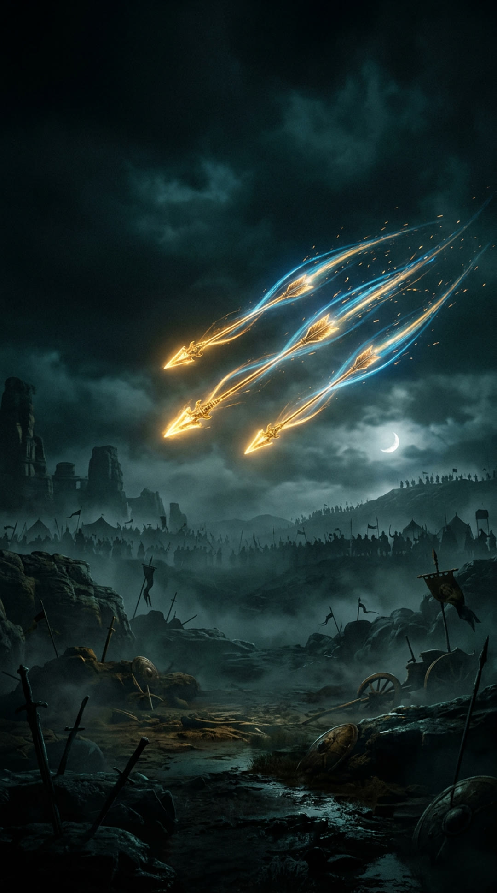
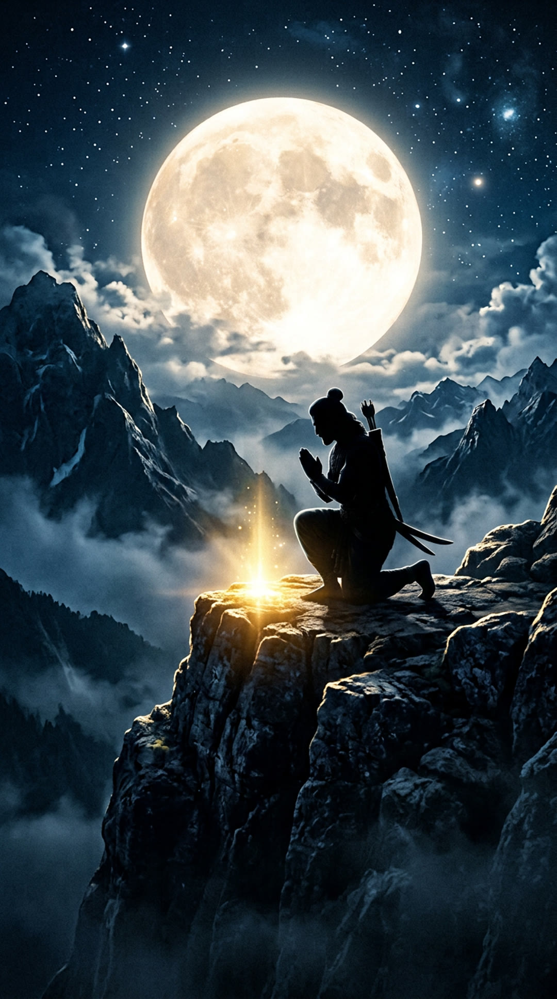
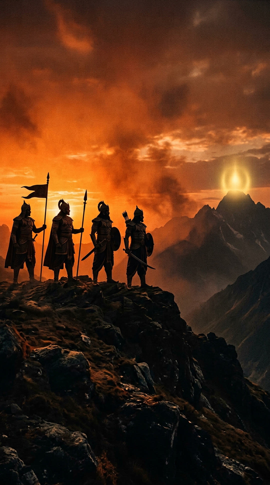

महाभारत · अंतिम रहस्य
असली विजेता
अर्जुन नहीं था

भीम का पोता · बर्बरीक
सिर्फ
3
बाण
और पूरा युद्ध खत्म

गुरु दक्षिणा
शीश का
महादान
“
मैं पूरा युद्ध देखना चाहता हूँ…
”

पांडवों का सवाल
तुमने युद्ध में
किसे लड़ते देखा?
बर्बरीक का उत्तर
असली विजेता…
स्वयं श्रीकृष्ण
फॉलो करें
महाभारत रहस्य
हर रहस्य · हर युग
महाभारत रहस्य
01
/ 05